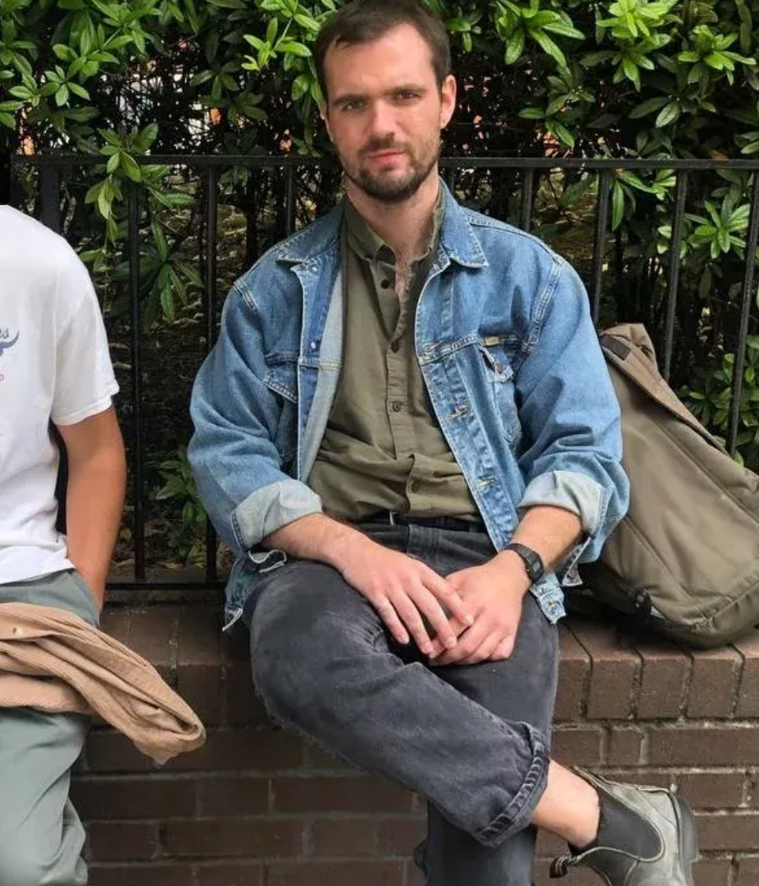

Platform cultures, digital subjectivity, and the styles of reaction.
A more personal, image-forward direction: less institutional, still calm, with the same content sitting in a looser and more confident frame.

A more personal, image-forward direction: less institutional, still calm, with the same content sitting in a looser and more confident frame.